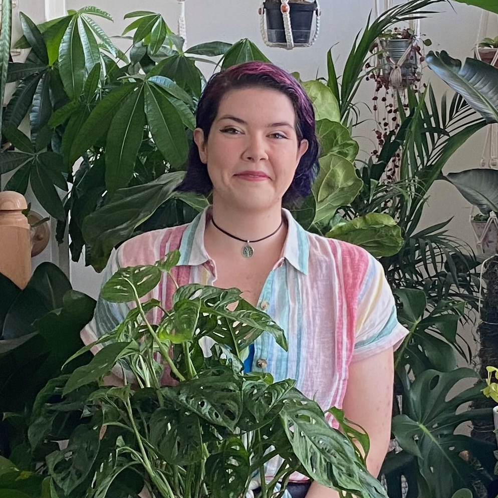
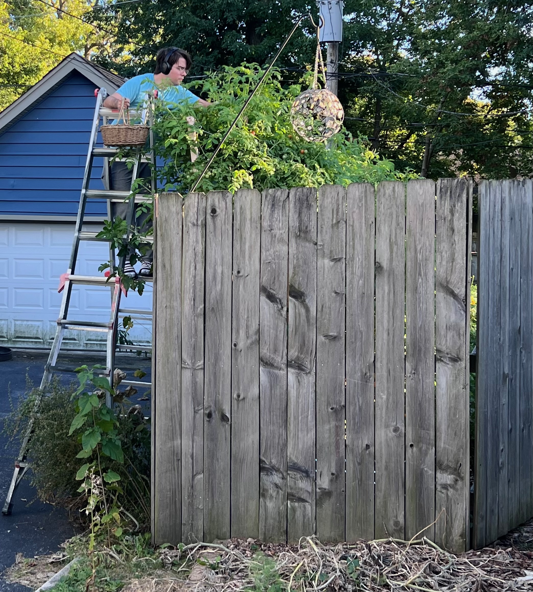

About

Rare Heirloom Tomatoes is the passion project of Em Wikner, an engineer who prefers to be outside in the garden instead of inside at a desk. You can find her tinkering with her plants in her Homewood, Illinois garden as often as possible. She is a lover of the indescribably rich, nutrient dense, delicious tomatoes that can't be found at the grocery store, and wants to spread that love to as many folks as possible. All tomato plants reared in her care are grown with all organic methods with no herbicides or pesticides.
The Garden


